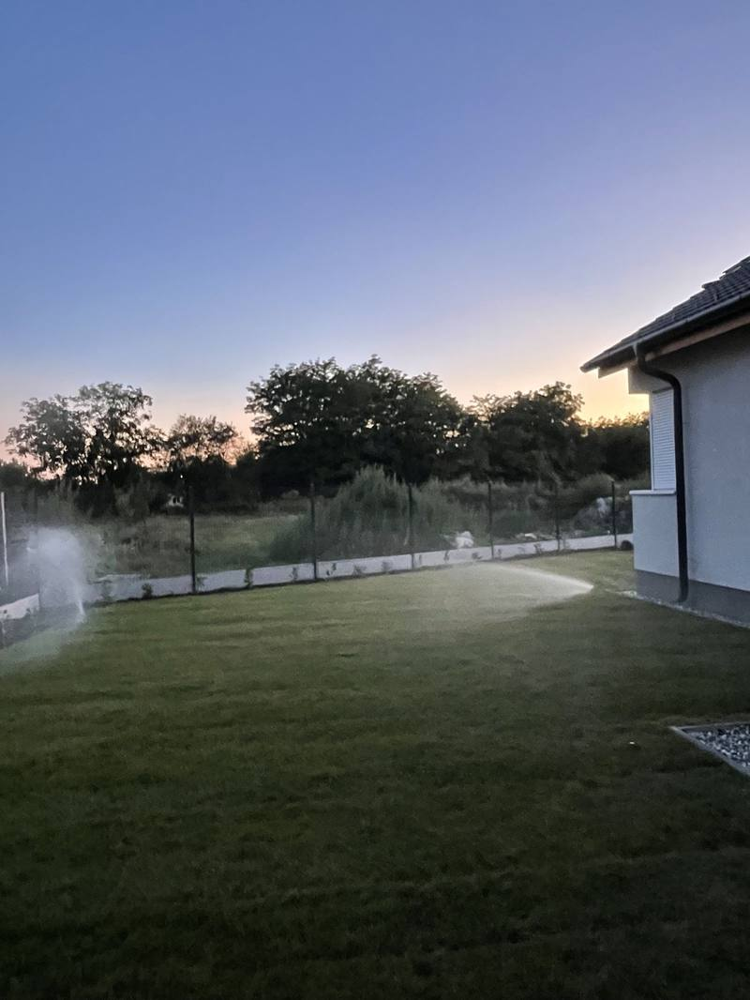
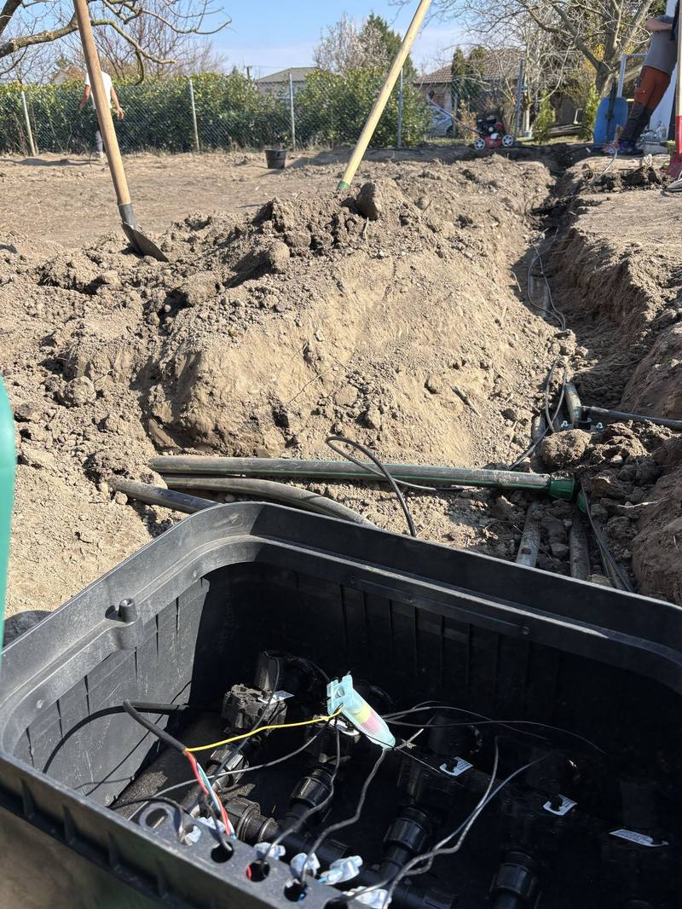
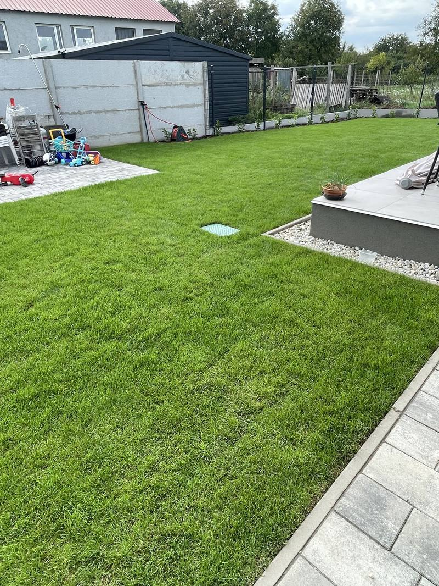

Irrigation systems in Győr — zoned and automatic.
We survey what your garden needs and measure the real pressure at your water source, design a system divided into zones, and build it turnkey — from the site survey to commissioning, with one team.

The system is a network of pipe laid below ground level and divided into zones. The sprinkler heads rise on water pressure and retract below the plane of the lawn afterwards — day to day it is effectively invisible.
A garden is not one big zone.
Lawn, planting beds, hedging and a kitchen garden all want different amounts of water at different times. So each of them gets its own zone — and gets exactly as much water as it needs.
into zones Lawn, planting beds, hedging and a kitchen garden all want different amounts of water at different times. Each gets its own zone, so each gets exactly as much as it needs.
from your phone A modern controller can be reached over the internet — you set the watering programme from your phone. Rain and frost sensors cut off watering that isn't needed.
it belongs Beds and taller planting get a drip and micro-irrigation circuit: the water goes straight to the root zone, with minimal evaporation and fewer weeds.
water source We measure the real pressure and flow of the mains, the well or the cistern, and set the number of zones and how many circuits run at once to match — so the system runs steadily.
schedule, set up At handover we programme the seasonal watering schedule and show you how to change it. No more phoning a neighbour about the watering while you are away.
reliability Low-flow emitters are sensitive to blockage, so we build in a filter and, where it is needed, a pressure reducer. That is the basis of trouble-free running in the long term.
Visible water, hidden network.
What you see
Sprinklers running for a few minutes at dawn, then nothing. During the day there is not one thing standing proud of the lawn.
- 01 Pop-up sprinkler heads
- 02 An even, green lawn
- 03 The valve box lid
- 04 The controller, on the wall or on your phone
What makes it work
- 01 Measured pressure and flow at the source
- 02 Main line under the lawn
- 03 Valve box, one valve per zone
- 04 Separate circuits for the lawn and the beds
- 05 Controller, with rain and frost sensors
The number of zones is not something we decide: the measured flow at the source, divided by what one circuit needs, gives how many zones can run and for how long. That is why every survey begins by measuring the pressure.
Not a catalogue photo — our own work.

This box
decides everything.
The solenoid valves open and close the zones, and the controller cable starts here. The pipe goes into narrow trenches, and the turf is lifted and put back in layers — within a few weeks the run has healed over.

Good irrigation is good when you don't notice it.
Rapidkert — irrigationWe start by measuring, not from a template.
At the survey we measure the pressure and flow of the water source — mains, well or cistern — because that is what sets the number of zones and how many circuits can run at once.
Free site survey
We measure the size and shape of the area and how the light and shade fall, and we measure the pressure and flow at the water source.
Engineered layout
We set out the zoning, the sprinkler layout and the pipe runs — sized on what your garden actually needs, not on a standard template.
Building it
The pipe goes into narrow trenches, and we install the valve boxes, the sprinkler heads and the controller. The turf is lifted and put back in layers.
Commissioning
We set the watering programme, test every zone and hand the system over. We show you how to run it and stay for your questions.
Maintenance
Spring start-up, autumn draining, fault finding. We can look after the system continuously, so it runs without trouble for years.
From a family garden to industrial grounds.
family houses A separate zone for the lawn, the beds and the hedging. With smart control and rain and frost sensors — day to day the system is effectively invisible, and it still looks after the garden.
apartment blocks The end of the "who waters while we're away?" argument. A clear, easily managed zone structure, with heads that do not water the path and the car park — which also makes sense for the service charge.
commercial grounds Well-kept green space lifts a company's image and cuts dust and heat. More zones, longer pipe runs, a pumped solution where needed, and a well or cistern integrated — with its own hydraulic sizing.
kitchen gardens For orchards and vegetable plots we build drip and micro-irrigation: low pressure, low flow, and outstanding use of water and nutrients. With fertigation added if you want it.
Free site survey · Itemised, transparent quote · Fixed price, no hidden costs.
What does an irrigation system cost in Győr?
The price depends on the size of the area, how the garden is broken up, the number of zones and the type of water source. That is why we don't work from a price list: after the free site survey you get a specific, itemised quote with every cost in it.
Where we take on work
We design and install irrigation systems in Győr and the surrounding villages: Győrújbarát, Győrújfalu, Abda, Nyúl, Écs, Pannonhalma, Töltéstava, Kisbajcs, Vámosszabadi, Gyirmót and Ménfőcsanak. For larger work we also travel out towards Mosonmagyaróvár, Csorna, Kapuvár and Pápa. If water saving is specifically what you are after, look at subsurface irrigation too; building a whole garden? See our garden construction service.
Not the answer you needed? Call us.
01 When is the best time to install irrigation?
The best moment is early in the garden's construction, before the lawn and the paving are finished — that way laying the pipe means the least has to be opened up. But it can go into a finished garden too: we lift the turf carefully and reinstate it afterwards. We work from spring through to autumn.
02 Will you dig up the whole garden?
No. The pipe goes into narrow trenches, and the turf is lifted and put back in layers. Within a few weeks the run has healed over, and nothing gives away that a complete system is working under the ground.
03 Does it work from a well or a cistern?
Yes. As well as the mains, the source can be a well, a cistern or stored rainwater, with a pump where one is needed. At the survey we measure the pressure and the flow and size the zones to match, so the system runs steadily.
04 How much water will it save me?
Zoned, timed watering and drip circuits meaningfully reduce water use compared with watering by hand, because the water arrives in the right amount and in the right place. Rain and frost sensors cut unnecessary watering further. The exact figure depends on the garden — we go through it at the survey.
05 What happens to the system in winter?
In autumn we drain the system so frost cannot damage the pipe and the heads, and in spring we start it up again. We can do that for you — it can be part of the maintenance package, so it is one more thing you don't have to think about.
06 Is there a warranty on the work?
Yes. Because both the design and the installation are ours, we warrant the whole system, and we stay reachable after commissioning. The specific conditions are set out in the quote.
Our other services
08 — Let's start
Your garden deserves to stay green by itself.
Book a free site survey in Győr or the surrounding area. We look at the garden, measure the water source, and put together the system that takes the watering off your hands for years.